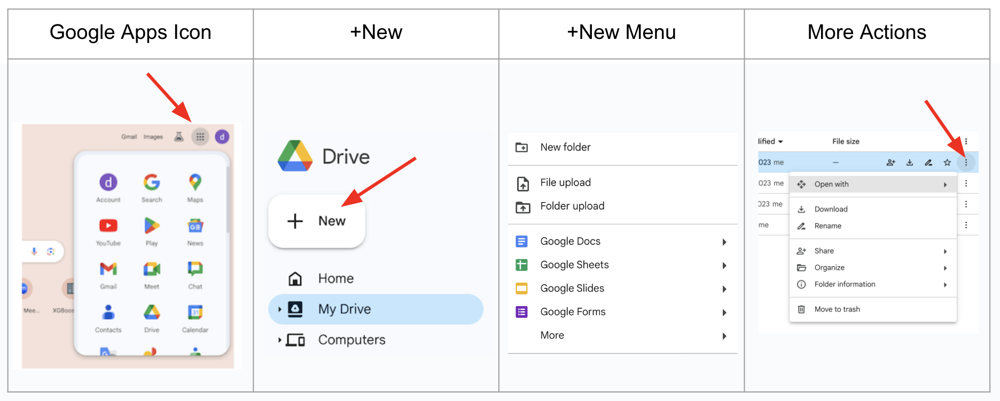
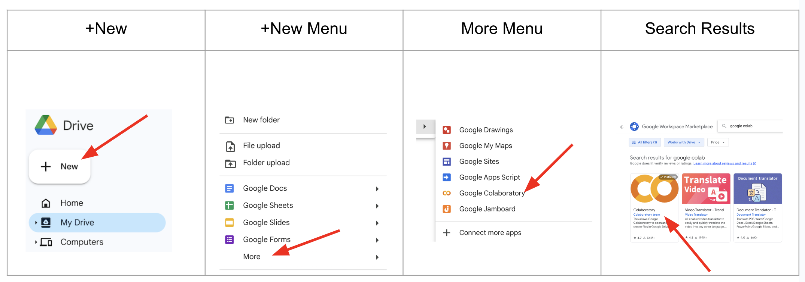
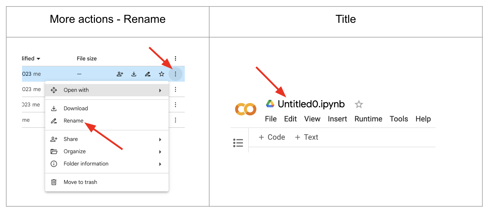
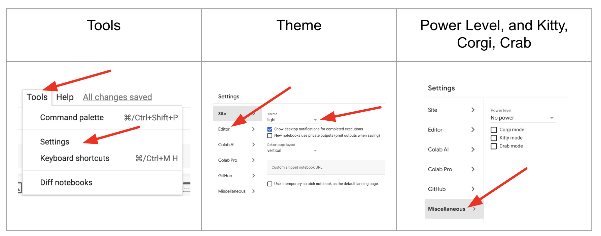
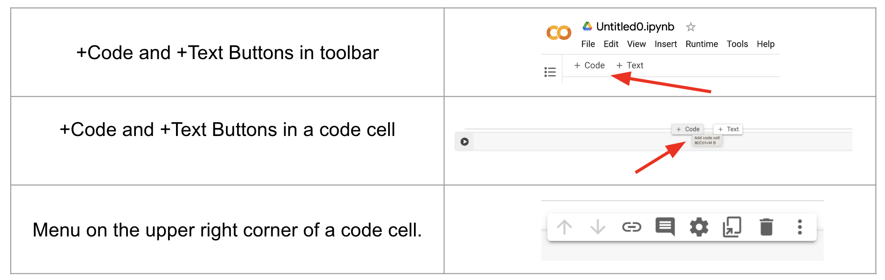

Google Colab#
Google Colab (Colaboratory) is a cloud-based notebook for writing and executing Python code.
You need to sign into your Google account to execute code and save your notebook.
There’s no requirement to install any software on your computer.
Sharing your notebooks is easy, and Colab files are automatically saved to Google Drive.
Google Drive#
Google Drive is used for storing files in the cloud.
You can manage, modify, and share your files.
By default, you have 15 GB of free storage, but there are also options for paid storage, such as 100 GB, 200 GB, and so on.
Within your Google or Gmail account, you can access Google Drive and other applications by clicking on the Google Apps Icon, which has nine dots and resembles a square.
By clicking on
+Newin the upper left corner of your Google Drive (located underneath the Drive icon), you can:Upload a folder or file to Drive
Create Google Docs, Google Sheets, Google Slides, Google Forms, etc.
When you click on the
More Actionsicon (three vertical dots on the right), you will see options to modify your folder.You can move, download, share, rename, or delete your files and folders.

Installing Colab to your Google Drive#
You can easily create Colab notebooks on your Google Drive by installing Colab onto your Google Drive (not onto your computer).
Follow the following steps for installation:
Click on
+Newin the upper left corner of your Google Drive (located underneath the Drive icon).Choose the
Moreoption at the end.In the new menu, if you see the Google Colaboratory icon, it means you already have Colab installed on your drive.
If there is no Google Colaboratory icon, then click on
Connect More Apps.Search for Google Colaboratory.
Click on Google Colaboratory in the search results and install Colab on your drive.

Create a new Colab notebook#
Follow these steps:
Click on
+Newin the upper left corner of your Google Drive (located underneath the Drive icon).Choose the
Moreoption at the end.In the new menu, click on
Google Colaboratory.
Additionally, instead of using +New, you can right-click to access its contents.
Rename a Colab File#
There are two ways to rename a Colab notebook:
Use the
More Actionsicon (three vertical dots on the right).Open the Colab notebook (the default name is Untitled0) and click on its name in the upper left corner, next to the Google Drive icon.

More Tools#
Theme#
There are three theme options:
light (white background)
dark (black background)
adaptive (color depends on time)
Follow these steps on the toolbar to change the theme: Tools –> Settings –> Theme
Power Level, and Kitty, Corgi, Crab#
These are some fun tools to make the notebook more fancy:
Go to
Tools–>Settings–>MiscellaneousYou can adjust the power level to add sparks when you write or execute code.
You can add walking Kitty, Corgi, and Crab characters to your notebook.

Cells in Colab#
These are rectangular-shaped boxes that come in two types:
Text Cell: Used for writing explanatory text.
Code Cell: Used for writing and executing Python code.
By default, a new notebook contains one code cell.
You can add, delete, and move cells up or down.
A Colab notebook is essentially a list of cells.
Adding Cells#
You can add a text or code cell by using the +Code and +Text buttons on the toolbar (upper left corner).
You can use these buttons to add a cell below.
When you move the cursor to the upper (lower) middle of a cell, you will also see +Code and +Text buttons.
You can use them to add a cell above (below).

Delete, Move and Comment#
When you click on a cell, a menu will appear in the upper right corner of the cell. Using this menu:
You can delete the cell.
You can move the cell up or down.
You can add a comment to the cell.
Short cuts#
A: Add a code cell aboveB: Add a code cell belowshift+Enter: Execute a code cell